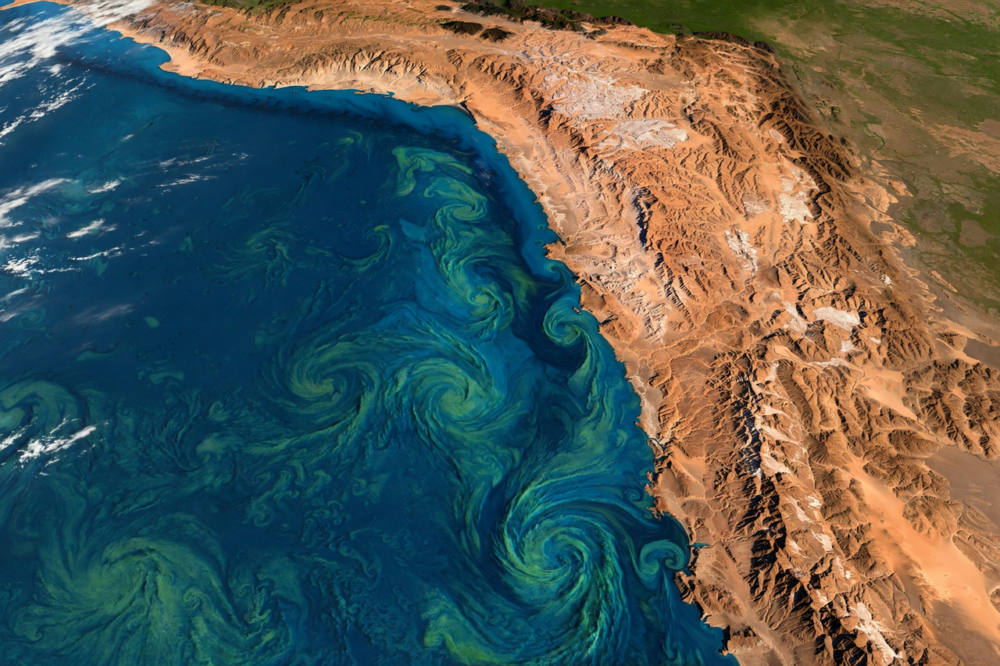

From Wikipedia, the free encyclopedia

| Humboldt Current | |
|---|---|
| Also called | Peru Current |
| Flow | Northward along the west coast of South America, from about 45°S to the equator |
| Type | Cold, low-salinity eastern boundary current |
| Named for | Alexander von Humboldt |
The Humboldt Current, also called the Peru Current, is a cold, low-salinity ocean current that flows northward along the western coast of South America. It is an eastern boundary current of the South Pacific subtropical gyre, extending from the southern tip of Chile (about 45°S) to northern Peru near the equator, where it turns west to join the South Equatorial Current. The current is named after the Prussian naturalist Alexander von Humboldt, who measured its low temperatures in 1802.
The current flows slowly — on the order of 10–20 cm per second — but is broad, up to about 900 km offshore, and carries large volumes of water northward. Coastal winds drive intense upwelling along the shore, lifting cold, nutrient-laden water into the sunlit surface layer. The cold sea surface also chills the air above the adjacent land, helping to create the extreme aridity of the Atacama and Sechura deserts and the coastal fog (garúa) of Lima.
The Humboldt Current Large Marine Ecosystem is the most productive ocean ecosystem in the world. Its upwelling supports immense populations of phytoplankton, krill and schooling fish — above all the Peruvian anchoveta, whose fishery has often been the largest single-species fishery on Earth, yielding several million tonnes a year for fishmeal and oil. The food web in turn supports guano seabirds, sea lions, Humboldt penguins and the Humboldt squid. During El Niño events, warm equatorial water invades the coast, upwelling falters, anchoveta stocks collapse and seabird colonies starve — a cycle recognised for centuries by Peruvian fishermen.